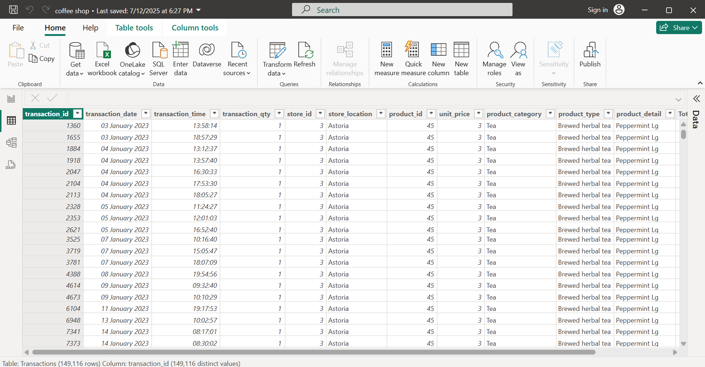
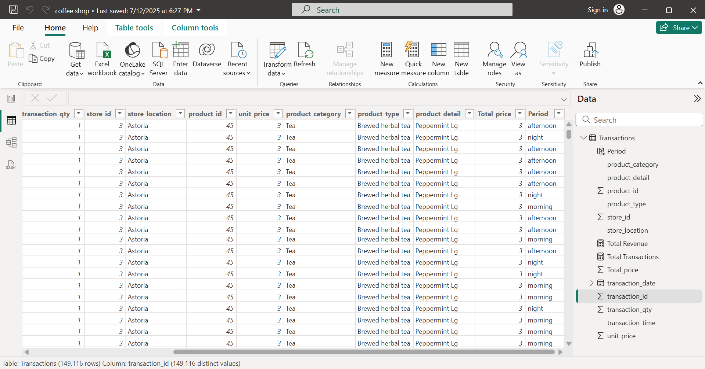
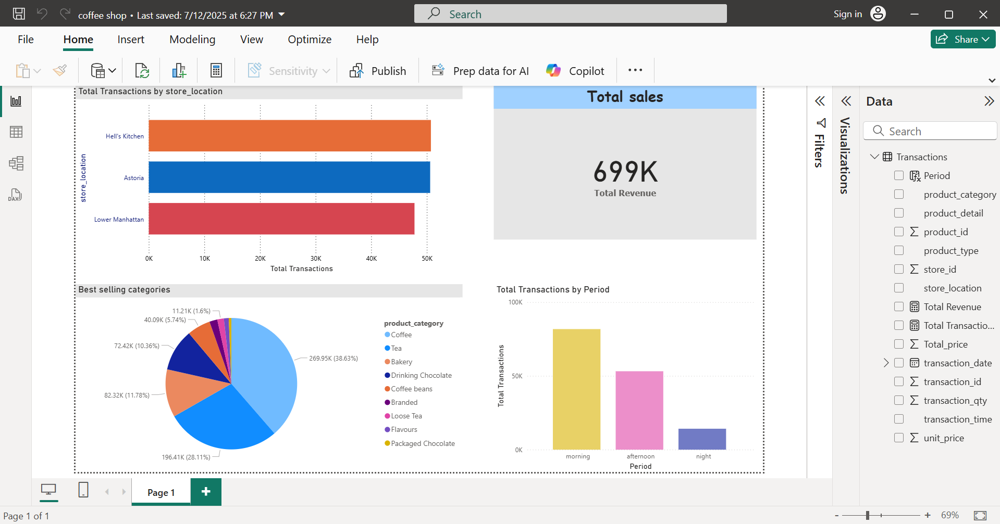

<div class="load-data">
  <div class="popup-main-content">
    <div class="container">
      <div class="row">

        <!-- Project Title -->
        <div class="col-md-12">
          <div class="portfolio-details-title">
            <h2>Coffee Shop Sales – Power BI Data Analysis</h2>
          </div>
        </div>

        <!-- Project Info -->
        <div class="col-lg-6">
          <div class="portfolio-details-info p-0 border-0">
            <div class="tags"><span>Client:</span> Training Project</div>
            <div class="tags"><span>Category:</span> Data Analysis</div>
            <div class="tags"><span>Date:</span> July 2025</div>
            <div class="tags">
              <span>Power BI File:</span>
              <a href="img/coffee shop.pbix" target="_blank" rel="noopener noreferrer" class="text-success">
                downlode.PBIX Report
              </a>
            </div>
          </div>
        </div>

        <!-- Project Description -->
        <div class="col-lg-12">
          <p class="portfolio-description mt-30">
            <strong>Coffee Shop Sales</strong> is a solo data analytics project developed using Power BI. I analyzed a fictional coffee shop dataset sourced from Kaggle. The goal was to clean the data, create meaningful DAX measures, and build a user-friendly interactive dashboard to reveal insights about sales performance.
          </p>

          <h4 class="mt-4">Key Features:</h4>
          <ul class="portfolio-description" style="list-style-type: disc; padding-left: 20px;">
            <li>Cleaned and transformed raw transactional data.</li>
            <li>Created a calculated column for <strong>total_price</strong>.</li>
            <li>Built 4 main visuals to track performance and trends.</li>
            <li>Used DAX measures like <strong>Total Revenue</strong> and <strong>Total Transactions</strong>.</li>
            <li>Applied a <strong>SWITCH</strong> function to segment transactions by period: morning, afternoon, and night.</li>
            <li>Presented insights through an interactive Power BI dashboard.</li>
          </ul>

          <h4 class="mt-4">Dashboard Visuals:</h4>
          <ul class="portfolio-description" style="list-style-type: disc; padding-left: 20px;">
            <li><strong>Total Revenue:</strong> using a card visual.</li>
            <li><strong>Branch Comparison:</strong> total transactions per branch to identify the busiest location.</li>
            <li><strong>Top Products:</strong> most requested items by category.</li>
            <li><strong>Time-based Analysis:</strong> total transactions segmented by morning, afternoon, and night.</li>
          </ul>
        </div>

        <!-- Screenshots -->
        <div class="col-12">
          <h4 class="mt-4 mb-3">Screenshots:</h4>
        </div>
        <div class="col-lg-5 mt-40 mt-lg-0">
          <div class="portfolio-details-media">
            <div class="row">
              <div class="col-lg-12 col-md-6 mb-3">
                
              </div>
              <div class="col-lg-12 col-md-6 mb-3">
                
              </div>
              <div class="col-lg-12 col-md-6 mb-3">
                
              </div>
            </div>
          </div>
        </div>

        <!-- Navigation -->
        <div class="col-md-12">
          <div class="portfolio-details-nav d-flex justify-content-between">
            <div>
              <a class="portfolio-link" href="portfolio-details-02.html">Previous Project</a>
            </div>
            <!-- <div>
              <a class="portfolio-link" href="portfolio-details-04.html">Next Project</a>
            </div> -->
          </div>
        </div>

      </div> <!-- /row -->
    </div> <!-- /container -->
  </div> <!-- /popup-main-content -->
</div>
